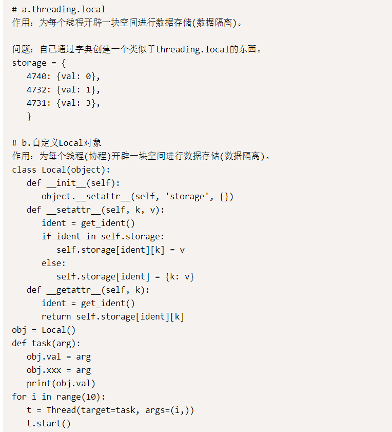

自由灵活，可扩展性强，透明可控，第三方库的选择面广。
二、Flask框架依赖组件？jinja2, werkzurg
三、Flask蓝图的作用？# blueprint把实现不同功能的module分开.也就是把一个大的App分割成各自实现不同功能的module.
# 在一个blueprint中可以调用另一个blueprint的视图函数, 但要加相应的blueprint名.
四、列举使用的Flask第三方组件？# Flask组件
flask-session session放在redis# a、简单来说，falsk上下文管理可以分为三个阶段：
1、'请求进来时'：将请求相关的数据放入上下问管理中
2、'在视图函数中'：要去上下文管理中取值
3、'请求响应'：要将上下文管理中的数据清除
# b、详细点来说：
1、'请求刚进来'：将request，session封装在RequestContext类中,app，g封装在AppContext类中,并通过LocalStack将requestcontext和appcontext放入Local类中
2、'视图函数中'：通过localproxy--->偏函数--->localstack--->local取值
3、'请求响应时'：先执行save.session()再各自执行pop(),将local中的数据清除
# g是贯穿于一次请求的全局变量，当请求进来将g和current_app封装为一个APPContext类； 再通过LocalStack将Appcontext放入Local中，取值时通过偏函数在LocalStack、local中取值； 响应时将local中的g数据删除
七、Flask中上下文管理主要涉及到了那些相关的类？并描述类主要作用？RequestContext #封装进来的请求（赋值给ctx）
AppContext #封装app_ctx
LocalStack #将local对象中的数据维护成一个栈（先进后出）
Local #保存请求上下文对象和app上下文对象
八、为什么要Flask把Local对象中的的值stack维护成一个列表？# 因为通过维护成列表，可以实现一个栈的数据结构，进栈出栈时只取一个数据，巧妙的简化了问题。还有，在多app应用时，可以实现数据隔离；列表里不会加数据，而是会生成一个新的列表。local是一个字典，字典里key（stack）是唯一标识，value是一个列表
九、Flask中多app应用是怎么完成？请求进来时，可以根据URL的不同，交给不同的APP处理。蓝图也可以实现。
#app1 = Flask('app01')
#app2 = Flask('app02')
#@app1.route('/index')
#@app2.route('/index2')
源码中在DispatcherMiddleware类里调用app2.__call__，之后app也按单app的流程走。就是从app.__call__走。
十、Flask框架默认session处理机制？ 十一、解释Flask框架中的Local对象和threading.local对象的区别
十二、Flask中 blinker 是什么？# flask中的信号blinker。
信号主要是让开发者可是在flask请求过程中定制一些行为。或者说flask在列表里面预留了几个空列表，在里面存东西。简言之，信号允许某个'发送者'通知'接收者'有事情发生了 @before_request有返回值，blinker没有返回值
# 10个信号
request_started = _signals.signal('request-started') #请求到来前执行
request_finished = _signals.signal('request-finished') #请求结束后执行
before_render_template = _signals.signal('before-render-template') #模板渲染前执行
template_rendered = _signals.signal('template-rendered') #模板渲染后执行
got_request_exception = _signals.signal('got-request-exception') #请求执行出现异常时执行
request_tearing_down = _signals.signal('request-tearing-down') #请求执行完毕后自动执行（无论成功与否）
appcontext_tearing_down = _signals.signal('appcontext-tearing-down') #请求上下文执行完毕后自动执行（无论成功与否）
appcontext_pushed = _signals.signal('appcontext-pushed') #请求app上下文push时执行
appcontext_popped = _signals.signal('appcontext-popped') #请求上下文pop时执行
message_flashed = _signals.signal('message-flashed')#调用flask在其中添加数据时，自动触发